Computer Vision
Real-Time Hand Sign Detection
ASL gesture recognition using MediaPipe landmarks and deep learning with sub-100ms inference.
From embedded systems and Arduino tinkering to AI-driven autonomous robots and agentic software — I build intelligent systems that bridge the gap between digital innovation and physical-world impact. Completed my Bachelor of Computer Applications (BCA), specializing in Artificial Intelligence, Machine Learning, Robotics & IoT, from Yenepoya College, and co-founding ventures that turn ideas into real products.
Computer vision, medical imaging, and intelligent systems — trained, tuned, and deployed.
ASL gesture recognition using MediaPipe landmarks and deep learning with sub-100ms inference.
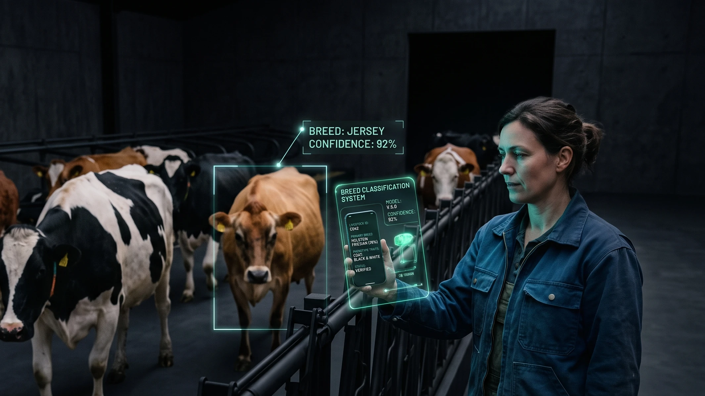
Image ClassificationAn AI model designed specifically for predicting cow breeds from images
A deep learning system that classifies chest X-rays for pneumonia using clinically-grounded spatial attention.
YOLOv8-powered dental radiograph analysis for rapid cavity screening.
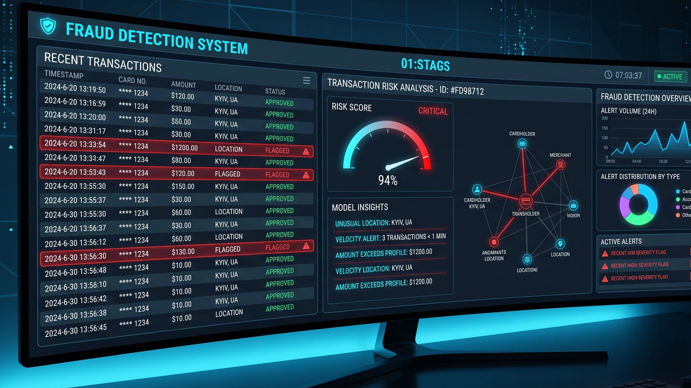
Anomaly DetectionA deep learning system that classifies credit card transactions as fraudulent or legitimate.
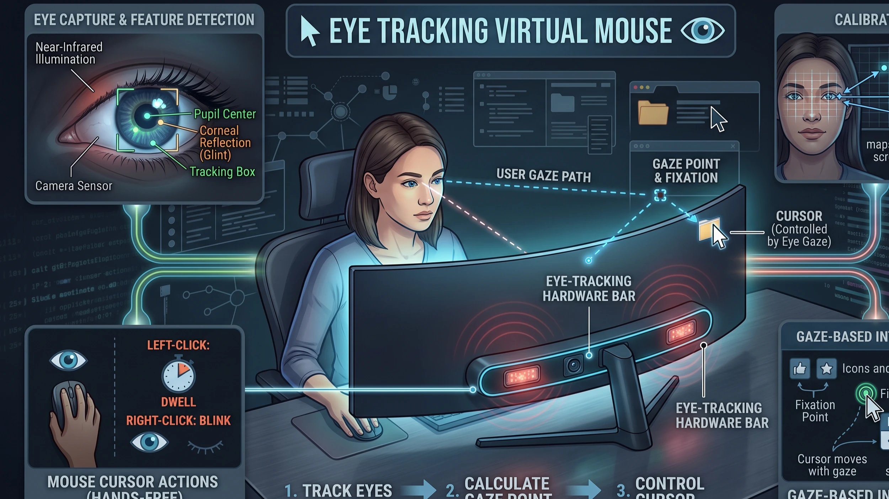
Assistive TechA Python-based accessibility tool that allows users to control their computer mouse hands-free using eye movements.
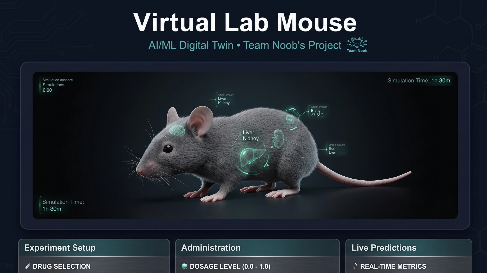
SimulationA virtual lab mouse simulation using a Random Forest classifier to predict pharmacological outcomes.
From Arduino prototypes to NVIDIA Isaac Sim — the full hardware-to-simulation pipeline.
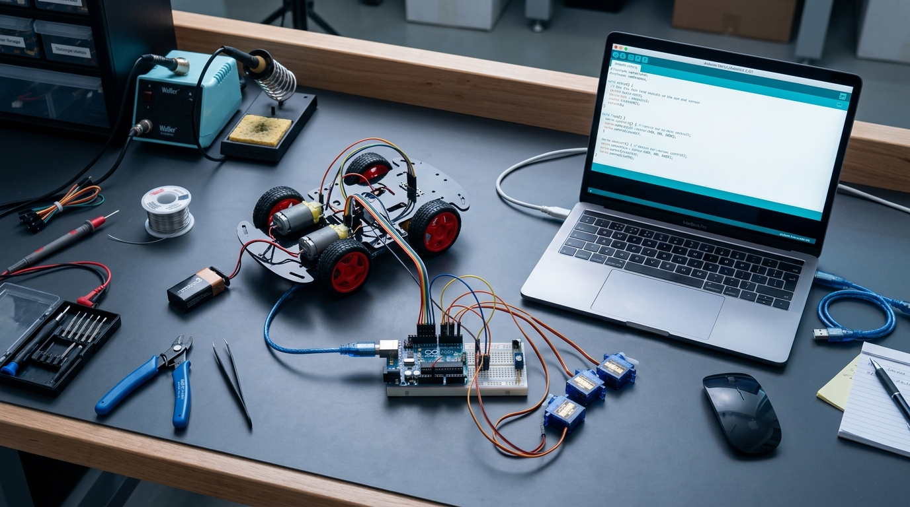
IoT RoboticsA Bluetooth-controlled robotic car prototype designed to demonstrate embedded hardware integration and wireless teleoperation.
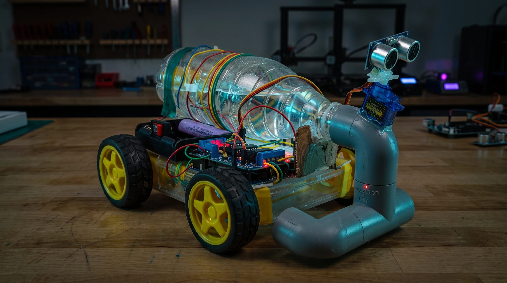
AutonomousAn autonomous, Arduino-powered robotic vacuum cleaner
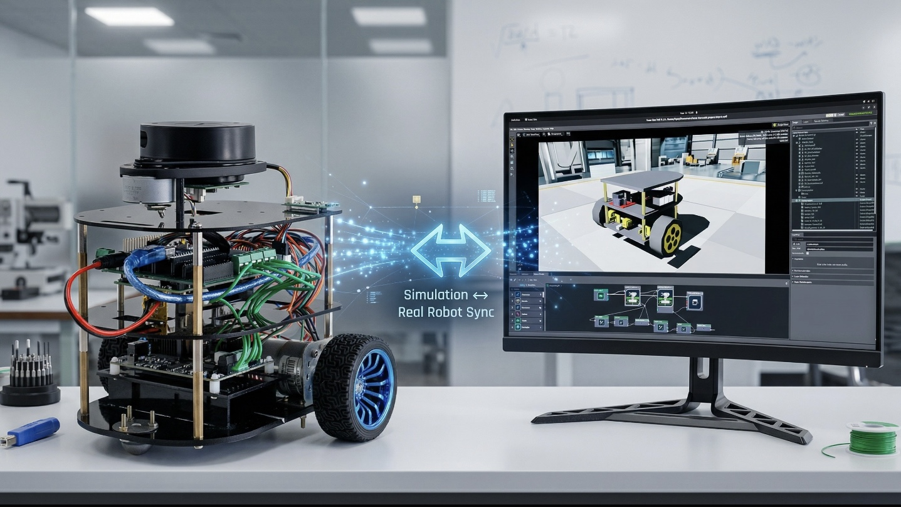
SimulationA digital twin system that synchronizes a physical two-wheeled mobile robot with a 3D virtual simulation in real time.
An autonomous self-driving car simulated in NVIDIA Isaac Sim using machine learning for lane tracking and computer vision for sign recognition.
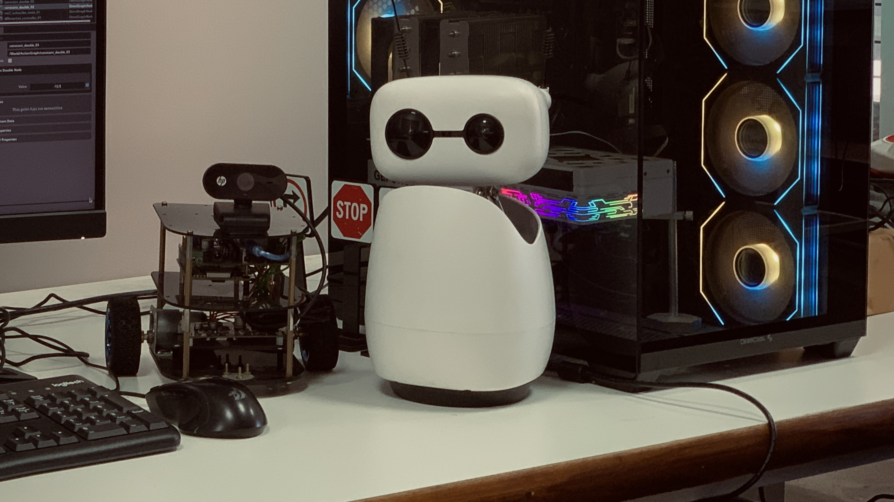
Companion RobotConversational robot with speech-to-text, LLM integration, and servo expressions.
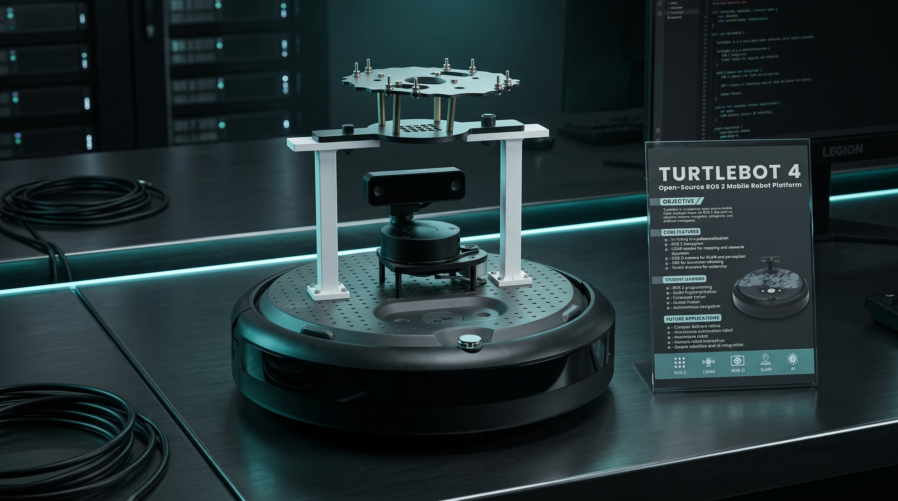
NavigationA workflow for implementing SLAM mapping and autonomous navigation using the TurtleBot 4 on ROS 2 Humble.
Autonomous agents, full-stack platforms, and AI-powered applications.
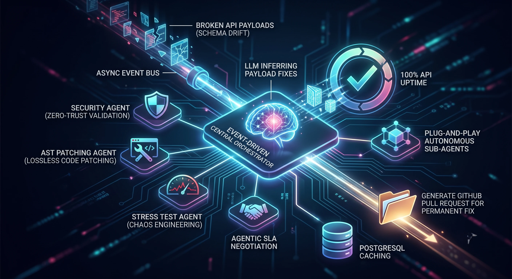
Agentic AIA zero-infrastructure multi-agent proxy system that intercepts API schema drift and heals payloads dynamically.
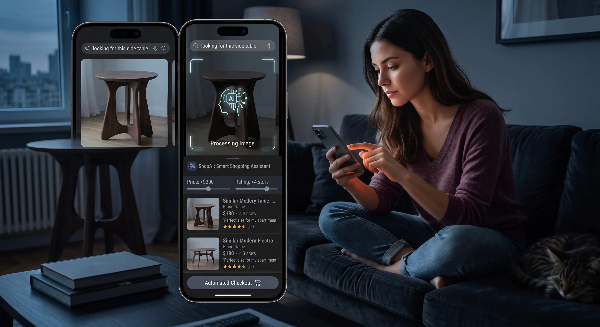
Agentic AIAn AI shopping assistant chatbot that helps users discover and purchase products using text or images.
A telecom customer support chatbot that uses RAG (Retrieval-Augmented Generation) to answer queries about mobile services, connectivity, and billing.
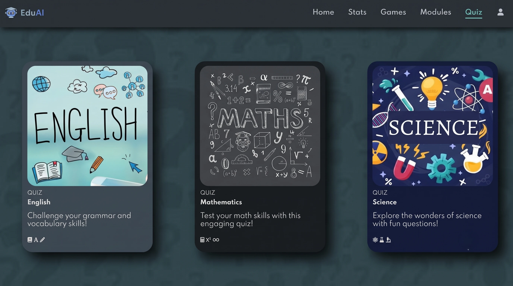
EdTechAn AI-integrated e-learning platform that combines academic modules, games, and quizzes with machine learning analytics.
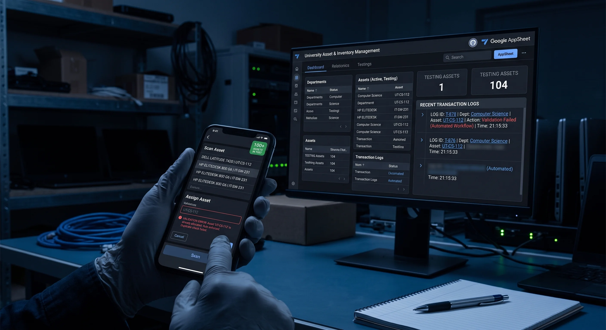
EnterpriseA mobile-friendly University Asset & Inventory Management application designed to streamline equipment tracking.
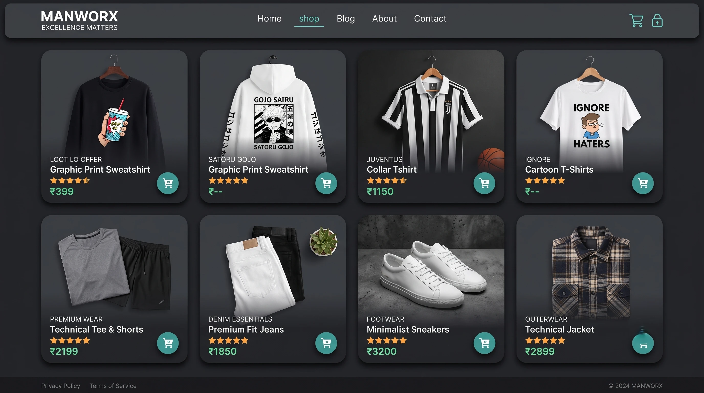
E-CommerceA responsive e-commerce website for a men's fashion brand named ManWorx.
Rapid prototyping under pressure — ideas to working demos in 24–48 hours.
A machine learning web application designed to predict and assess maritime operational risks.
A digital e-commerce and support platform designed to empower local artisans and showcase handmade products.
An AI model designed specifically for predicting cow breeds from images.
A deep learning system that classifies chest X-rays for pneumonia using clinically-grounded spatial attention.
A zero-infrastructure multi-agent proxy system that intercepts API schema drift and heals payloads dynamically.
Co-founding ventures, shipping products, and leading teams from zero to one.
ManWorx is a premier e-commerce and reselling venture offering a meticulously curated selection of high-quality clothing and cutting-edge gadgets. The company's core mission is to provide unparalleled quality and exceptional service to its clientele. Serving as a dedicated destination for stylish apparel and modern electronics, ManWorx is consistently committed to ongoing growth, customer satisfaction, and continuous innovation.
ExcelEd is an educational consultancy focused on guiding students toward confident and informed academic and career decisions. The organization provides comprehensive career guidance, college selection support, scholarship assistance, education loans, and free campus visits. Dedicated to simplifying the educational journey through transparent and personalized counseling, ExcelEd operates on a collaborative foundation driven by a shared vision to help students successfully navigate the right path for their future.
TCE — 2 Months
Yenepoya — Present-Hybrid
Intensive hands-on training covering Python, Azure ML Studio, and machine learning pipelines.
Data wrangling, statistical analysis, and visualization with Power BI and Azure tools.
Progressed from learner to Peer Mentor, guiding students through hands-on IoT workshops.
Sensors, microcontrollers, MQTT protocols, and cloud connectivity fundamentals.
Mobile app-controlled robots using NodeMCU, motor drivers, and Blynk IoT platform.
Branching strategies, pull requests, merge conflict resolution, and CI/CD basics.
Microsoft Certified
Microsoft Certified
Microsoft Certified
Microsoft Certified
Specialization: Artificial Intelligence, Machine Learning, Robotics & IoT (with Microsoft)
Yenepoya College — Graduate